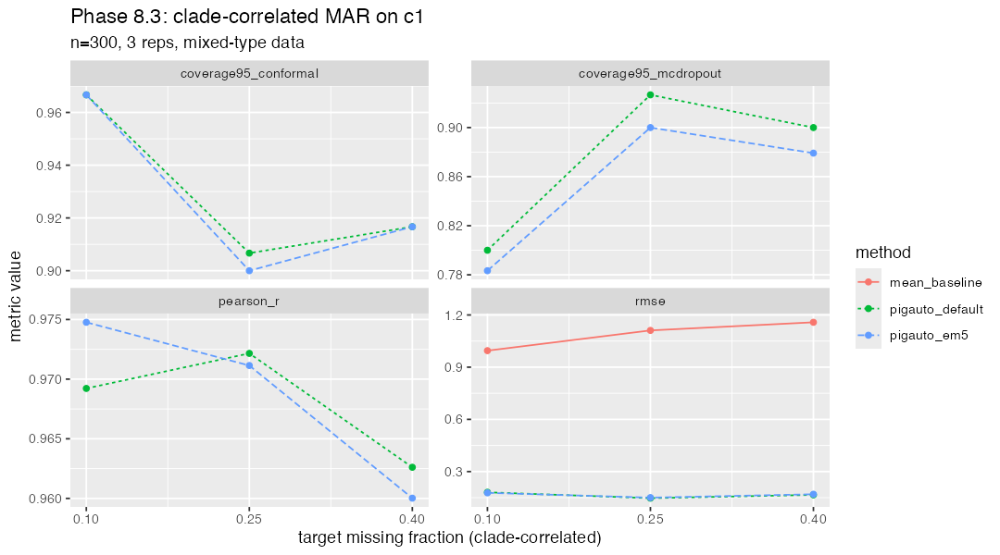

Pick random internal nodes, union their descendants until a target fraction is covered, mask ONE focal trait (c1) in all covered tips. n=300, 3 target_fracs × 3 reps × 3 methods.
Total wall: 17.9 min.

| method | target_frac | trait | metric | mean value |
|---|---|---|---|---|
| mean_baseline | 0.10 | b1 | accuracy | 0.789 |
| pigauto_default | 0.10 | b1 | accuracy | 1.000 |
| pigauto_em5 | 0.10 | b1 | accuracy | 1.000 |
| mean_baseline | 0.25 | b1 | accuracy | 0.778 |
| pigauto_default | 0.25 | b1 | accuracy | 1.000 |
| pigauto_em5 | 0.25 | b1 | accuracy | 1.000 |
| mean_baseline | 0.40 | b1 | accuracy | 0.767 |
| pigauto_default | 0.40 | b1 | accuracy | 0.900 |
| pigauto_em5 | 0.40 | b1 | accuracy | 0.900 |
| mean_baseline | 0.10 | cat1 | accuracy | 0.600 |
| pigauto_default | 0.10 | cat1 | accuracy | 0.933 |
| pigauto_em5 | 0.10 | cat1 | accuracy | 0.933 |
| mean_baseline | 0.25 | cat1 | accuracy | 0.600 |
| pigauto_default | 0.25 | cat1 | accuracy | 0.867 |
| pigauto_em5 | 0.25 | cat1 | accuracy | 0.867 |
| mean_baseline | 0.40 | cat1 | accuracy | 0.533 |
| pigauto_default | 0.40 | cat1 | accuracy | 0.950 |
| pigauto_em5 | 0.40 | cat1 | accuracy | 0.950 |
| pigauto_default | 0.10 | c1 | coverage95_conformal | 0.967 |
| pigauto_em5 | 0.10 | c1 | coverage95_conformal | 0.967 |
| pigauto_default | 0.25 | c1 | coverage95_conformal | 0.907 |
| pigauto_em5 | 0.25 | c1 | coverage95_conformal | 0.900 |
| pigauto_default | 0.40 | c1 | coverage95_conformal | 0.917 |
| pigauto_em5 | 0.40 | c1 | coverage95_conformal | 0.917 |
| pigauto_default | 0.10 | c2 | coverage95_conformal | 0.967 |
| pigauto_em5 | 0.10 | c2 | coverage95_conformal | 0.967 |
| pigauto_default | 0.25 | c2 | coverage95_conformal | 0.967 |
| pigauto_em5 | 0.25 | c2 | coverage95_conformal | 1.000 |
| pigauto_default | 0.40 | c2 | coverage95_conformal | 0.900 |
| pigauto_em5 | 0.40 | c2 | coverage95_conformal | 0.867 |
| pigauto_default | 0.10 | c3 | coverage95_conformal | 0.983 |
| pigauto_em5 | 0.10 | c3 | coverage95_conformal | 0.983 |
| pigauto_default | 0.25 | c3 | coverage95_conformal | 0.967 |
| pigauto_em5 | 0.25 | c3 | coverage95_conformal | 0.983 |
| pigauto_default | 0.40 | c3 | coverage95_conformal | 1.000 |
| pigauto_em5 | 0.40 | c3 | coverage95_conformal | 1.000 |
| pigauto_default | 0.10 | c1 | coverage95_mcdropout | 0.800 |
| pigauto_em5 | 0.10 | c1 | coverage95_mcdropout | 0.783 |
| pigauto_default | 0.25 | c1 | coverage95_mcdropout | 0.927 |
| pigauto_em5 | 0.25 | c1 | coverage95_mcdropout | 0.900 |
| pigauto_default | 0.40 | c1 | coverage95_mcdropout | 0.900 |
| pigauto_em5 | 0.40 | c1 | coverage95_mcdropout | 0.879 |
| pigauto_default | 0.10 | c2 | coverage95_mcdropout | 0.817 |
| pigauto_em5 | 0.10 | c2 | coverage95_mcdropout | 0.833 |
| pigauto_default | 0.25 | c2 | coverage95_mcdropout | 0.900 |
| pigauto_em5 | 0.25 | c2 | coverage95_mcdropout | 0.867 |
| pigauto_default | 0.40 | c2 | coverage95_mcdropout | 0.800 |
| pigauto_em5 | 0.40 | c2 | coverage95_mcdropout | 0.867 |
| pigauto_default | 0.10 | c3 | coverage95_mcdropout | 0.750 |
| pigauto_em5 | 0.10 | c3 | coverage95_mcdropout | 0.817 |
| pigauto_default | 0.25 | c3 | coverage95_mcdropout | 0.883 |
| pigauto_em5 | 0.25 | c3 | coverage95_mcdropout | 0.900 |
| pigauto_default | 0.40 | c3 | coverage95_mcdropout | 0.900 |
| pigauto_em5 | 0.40 | c3 | coverage95_mcdropout | 0.900 |
| pigauto_default | 0.10 | c1 | pearson_r | 0.969 |
| pigauto_em5 | 0.10 | c1 | pearson_r | 0.975 |
| pigauto_default | 0.25 | c1 | pearson_r | 0.972 |
| pigauto_em5 | 0.25 | c1 | pearson_r | 0.971 |
| pigauto_default | 0.40 | c1 | pearson_r | 0.963 |
| pigauto_em5 | 0.40 | c1 | pearson_r | 0.960 |
| pigauto_default | 0.10 | c2 | pearson_r | 0.937 |
| pigauto_em5 | 0.10 | c2 | pearson_r | 0.931 |
| pigauto_default | 0.25 | c2 | pearson_r | 0.968 |
| pigauto_em5 | 0.25 | c2 | pearson_r | 0.977 |
| pigauto_default | 0.40 | c2 | pearson_r | 0.960 |
| pigauto_em5 | 0.40 | c2 | pearson_r | 0.962 |
| pigauto_default | 0.10 | c3 | pearson_r | 0.941 |
| pigauto_em5 | 0.10 | c3 | pearson_r | 0.923 |
| pigauto_default | 0.25 | c3 | pearson_r | 0.919 |
| pigauto_em5 | 0.25 | c3 | pearson_r | 0.941 |
| pigauto_default | 0.40 | c3 | pearson_r | 0.982 |
| pigauto_em5 | 0.40 | c3 | pearson_r | 0.981 |
| mean_baseline | 0.10 | c1 | rmse | 0.995 |
| pigauto_default | 0.10 | c1 | rmse | 0.181 |
| pigauto_em5 | 0.10 | c1 | rmse | 0.178 |
| mean_baseline | 0.25 | c1 | rmse | 1.111 |
| pigauto_default | 0.25 | c1 | rmse | 0.147 |
| pigauto_em5 | 0.25 | c1 | rmse | 0.150 |
| mean_baseline | 0.40 | c1 | rmse | 1.158 |
| pigauto_default | 0.40 | c1 | rmse | 0.166 |
| pigauto_em5 | 0.40 | c1 | rmse | 0.170 |
| mean_baseline | 0.10 | c2 | rmse | 0.595 |
| pigauto_default | 0.10 | c2 | rmse | 0.172 |
| pigauto_em5 | 0.10 | c2 | rmse | 0.181 |
| mean_baseline | 0.25 | c2 | rmse | 0.611 |
| pigauto_default | 0.25 | c2 | rmse | 0.161 |
| pigauto_em5 | 0.25 | c2 | rmse | 0.140 |
| mean_baseline | 0.40 | c2 | rmse | 0.587 |
| pigauto_default | 0.40 | c2 | rmse | 0.150 |
| pigauto_em5 | 0.40 | c2 | rmse | 0.147 |
| mean_baseline | 0.10 | c3 | rmse | 0.545 |
| pigauto_default | 0.10 | c3 | rmse | 0.148 |
| pigauto_em5 | 0.10 | c3 | rmse | 0.165 |
| mean_baseline | 0.25 | c3 | rmse | 0.527 |
| pigauto_default | 0.25 | c3 | rmse | 0.141 |
| pigauto_em5 | 0.25 | c3 | rmse | 0.120 |
| mean_baseline | 0.40 | c3 | rmse | 0.572 |
| pigauto_default | 0.40 | c3 | rmse | 0.080 |
| pigauto_em5 | 0.40 | c3 | rmse | 0.085 |